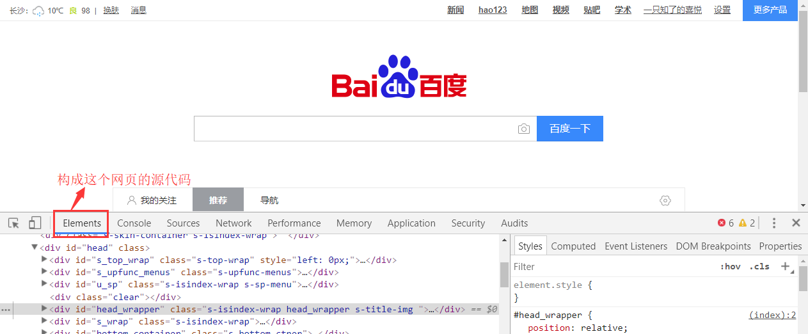
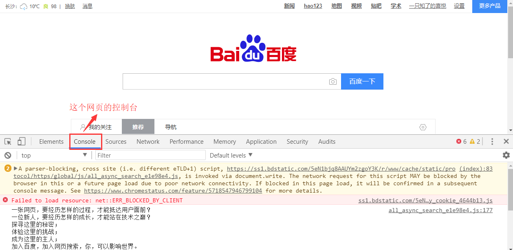
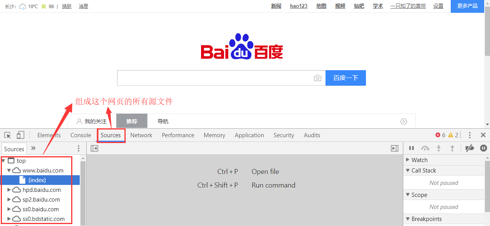
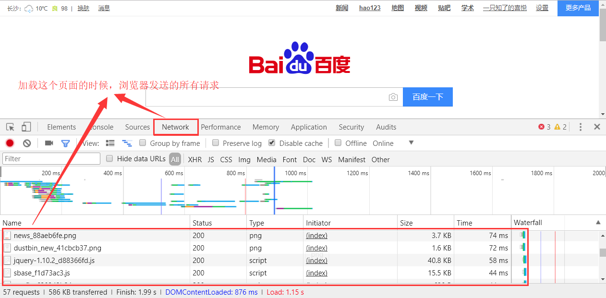

http协议和Chrome抓包工具
什么是http和https协议：
HTTP协议：全称是HyperText Transfer Protocol，中文意思是超文本传输协议，是一种发布和接收HTML页面的方法。服务器端口号是80端口。
HTTPS协议：是HTTP协议的加密版本，在HTTP下加入了SSL层。服务器端口号是443端口。
在浏览器中发送一个http请求的过程：
- 当用户在浏览器的地址栏中输入一个URL并按回车键之后，浏览器会向HTTP服务器发送HTTP请求。HTTP请求主要分为“Get”和“Post”两种方法。
- 当我们在浏览器输入URL http://www.baidu.com 的时候，浏览器发送一个Request请求去获取 http://www.baidu.com 的html文件，服务器把Response文件对象发送回给浏览器。
- 浏览器分析Response中的 HTML，发现其中引用了很多其他文件，比如Images文件，CSS文件，JS文件。 浏览器会自动再次发送Request去获取图片，CSS文件，或者JS文件。
- 当所有的文件都下载成功后，网页会根据HTML语法结构，完整的显示出来了。
url详解：
URL是Uniform Resource Locator的简写，统一资源定位符。
一个URL由以下几部分组成：
scheme://host:port/path/?query-string=xxx#anchor
- scheme：代表的是访问的协议，一般为
http或者https以及ftp等。 - host：主机名，域名，比如
www.baidu.com。 - port：端口号。当你访问一个网站的时候，浏览器默认使用80端口。
- path：查找路径。比如：
www.jianshu.com/trending/now，后面的trending/now就是path。 - query-string：查询字符串，比如：
www.baidu.com/s?wd=python，后面的wd=python就是查询字符串。 - anchor：锚点，后台一般不用管，前端用来做页面定位的。
在浏览器中请求一个url，浏览器会对这个url进行一个编码。除英文字母，数字和部分符号外，其他的全部使用百分号+十六进制码值进行编码。
常用的请求方法：
在Http协议中，定义了八种请求方法。这里介绍两种常用的请求方法，分别是get请求和post请求。
get请求：一般情况下，只从服务器获取数据下来，并不会对服务器资源产生任何影响的时候会使用get请求。post请求：向服务器发送数据（登录）、上传文件等，会对服务器资源产生影响的时候会使用post请求。 以上是在网站开发中常用的两种方法。并且一般情况下都会遵循使用的原则。但是有的网站和服务器为了做反爬虫机制，也经常会不按常理出牌，有可能一个应该使用get方法的请求就一定要改成post请求，这个要视情况而定。
请求头常见参数：
在http协议中，向服务器发送一个请求，数据分为三部分，第一个是把数据放在url中，第二个是把数据放在body中（在post请求中），第三个就是把数据放在head中。这里介绍在网络爬虫中经常会用到的一些请求头参数：
User-Agent：浏览器名称。这个在网络爬虫中经常会被使用到。请求一个网页的时候，服务器通过这个参数就可以知道这个请求是由哪种浏览器发送的。如果我们是通过爬虫发送请求，那么我们的User-Agent就是Python，这对于那些有反爬虫机制的网站来说，可以轻易的判断你这个请求是爬虫。因此我们要经常设置这个值为一些浏览器的值，来伪装我们的爬虫。Referer：表明当前这个请求是从哪个url过来的。这个一般也可以用来做反爬虫技术。如果不是从指定页面过来的，那么就不做相关的响应。Cookie：http协议是无状态的。也就是同一个人发送了两次请求，服务器没有能力知道这两个请求是否来自同一个人。因此这时候就用cookie来做标识。一般如果想要做登录后才能访问的网站，那么就需要发送cookie信息了。
常见响应状态码：
200：请求正常，服务器正常的返回数据。301：永久重定向。比如在访问www.jingdong.com的时候会重定向到www.jd.com。302：临时重定向。比如在访问一个需要登录的页面的时候，而此时没有登录，那么就会重定向到登录页面。400：请求的url在服务器上找不到。换句话说就是请求url错误。403：服务器拒绝访问，权限不够。500：服务器内部错误。可能是服务器出现bug了。
Chrome抓包工具：
Chrome浏览器是一个非常亲近开发者的浏览器。可以方便的查看网络请求以及发送的参数。对着网页右键->检查。然后就可以打开开发者选项。以下用图片来说明。



